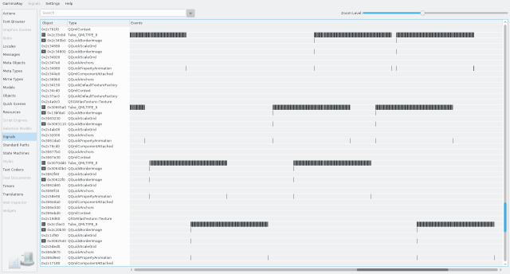

The signal plotter visualizes the lifetime of all QObject instances on the target (gray horizontal bars), and shows the emission of every signal on the target (vertical black bar on the emitting sender QObject).

Tooltips on each signal emission show information about the signal, including the signal name and the time of the emission.
The following examples make use of the signal plotter: